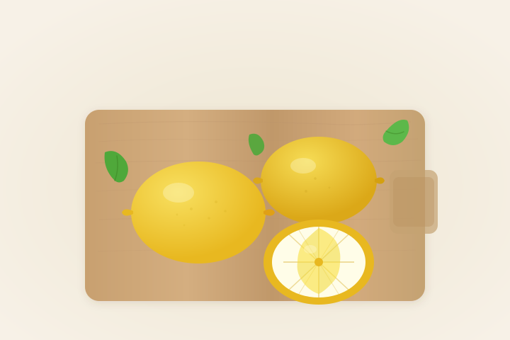

To vam je, ukratko, moja kuhinja – sve, samo ne plan i program.
Recepti nastaju spontano, od sastojaka koje već imam u frižideru ili ostavi. Moja životna filozofija je da poštujem hranu na stolu, a kućno vaspitanje mi ne dozvoljava da bacim namirnice koje se još mogu iskoristiti. Upravo tako nastali su neki od mojih najkreativnijih recepata.
Ponekad nastaju od onoga što već imam, jer je kasno da idem u prodavnicu ili je nedelja pa je sve zatvoreno, a glad ne pita za radno vreme.
Kada na stolu ostane nekoliko smežuranih jabuka, tačkaste banane ili par zaboravljenih šargarepa u frižideru, ja u njima ne vidim otpad. Vidim sledeći kolač.

Ipak, nisu svi recepti nastali od onoga što je ostalo u fioci ili na polici. Nekada prvo nastanu kao ideje u mojoj glavi, pa tek onda krenem u potragu za sastojcima. Međutim, ako ne pronađem dobre pomorandže, kupiću limun. Tako će umesto jafa kolača nastati kolač od limuna. U mojoj kuhinji mašta uvek ima poslednju reč.
Možda sam upravo zato zavolela kuvanje. Ono me je naučilo da ne mora sve da bude po planu. Ponekad najbolja ideja nastane tek kada prvi plan propadne.
Kreativnost nije u tome da uvek imaš sve sastojke, nego da znaš šta možeš da napraviš od onoga što već imaš.